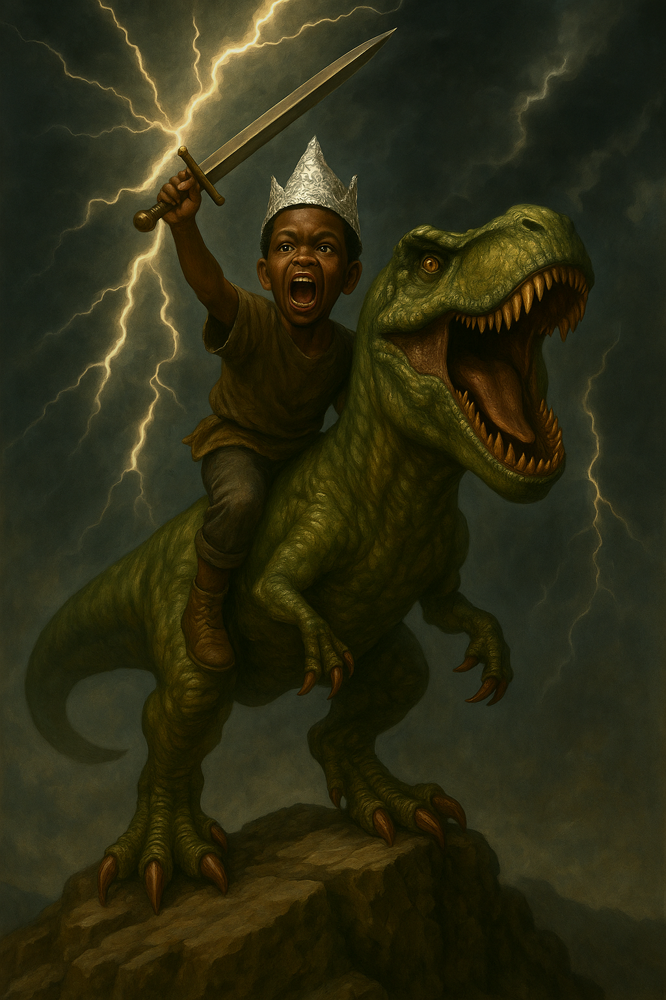

I started Genre AI because I believe stories are sacred.
As a kid, I was that boy with a plastic sword, drawing star maps, and building whole worlds from toys and sketchpads.
That wonder never left me—but the world wasn't built for dreamers.
It was built to box us in.I created Genre AI to break that box—for myself and for others.
I've been building this company since I was a kid—just not in the way you'd expect.My earliest ventures were made of Legos and spiral notebooks. I spent my childhood creating worlds, designing toys, and writing stories on the backs of school tests. I wasn't just playing—I was inventing.
As I got older, that spark evolved into real startups:
• A YouTube competitor (Camvus)
• A blockchain payroll system
• A digital workforce tool
• Even an iPhone repair hustle
All failed. All taught me lessons about execution, validation, and what creators really need.
Because I've lived both sides: the creative who couldn't finish because life got in the way… and the builder who learned—through wins and failures—how to build what dreamers really need.
Genre AI isn't just a product. It's MY BIRTHRIGHT,Its my CHILDHOOD DREAM,
It's the culmination of every story I've told, every company I've started, every lesson I've learned. It's the tool I wish I had—now built for the world.